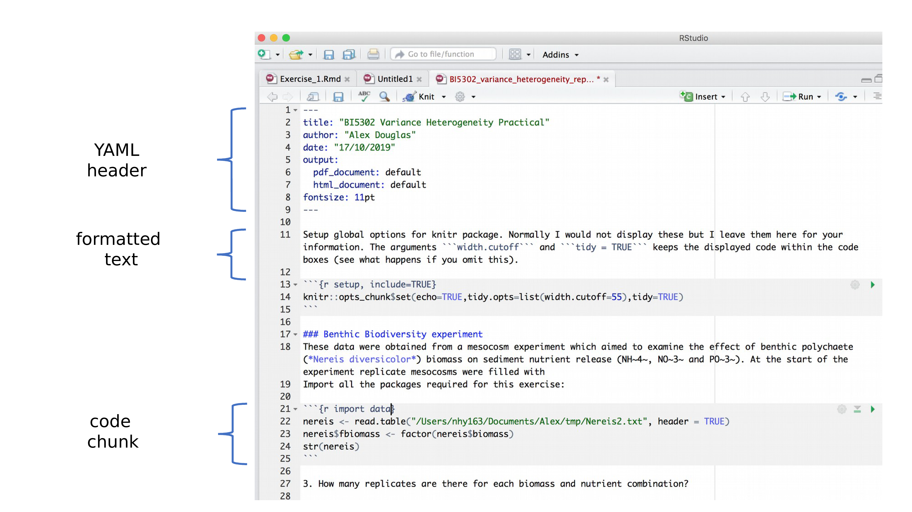
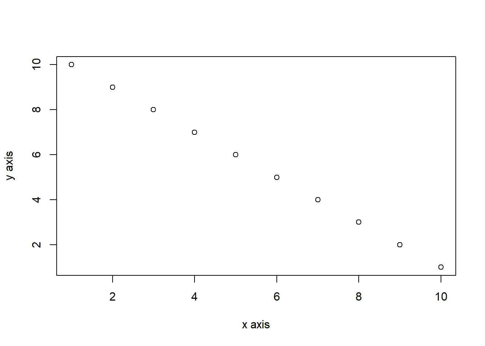
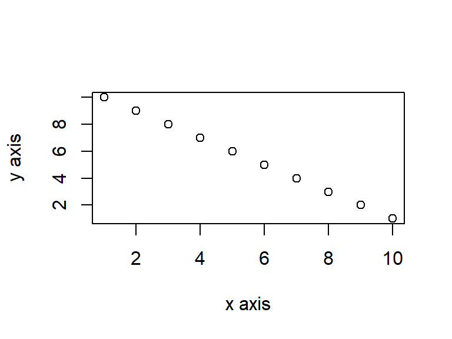

7.5 R markdown anatomy
OK, now that you can render an R markdown file in RStudio into both HTML and pdf formats let’s take a closer look at the different components of a typical R markdown document. Normally each R markdown document is composed of 3 main components, 1) a YAML header, 2) formatted text and 3) one or more code chunks.

7.5.1 YAML header
YAML stands for ‘YAML Ain’t Markup Language’ (it’s an ‘in’ joke!) and this optional component contains the metadata and options for the entire document such as the author name, date, output format, etc. The YAML header is surrounded before and after by a --- on its own line. In RStudio a minimal YAML header is automatically created for you when you create a new R markdown document as we did above but you can change this any time. A simple YAML header may look something like this:
---
title: My first R markdown document
author: Jane Doe
date: March 01, 2020
output: html_document
---In the YAML header above the output format is set to HTML. If you would like to change the output to pdf format then you can change it from output: html_document to output: pdf_document (you can also set more than one output format if you like). You can also change the default font and font size for the whole document and even include fancy options such as a table of contents and inline references and a bibliography. If you want to explore the plethora of other options see here. Just a note of caution, many of the options you can specify in the YAML header will work with both HTML and pdf formatted documents, but not all. If you need multiple output formats for your R markdown document check whether your YAML options are compatible between these formats. Also, indentation in the YAML header has a meaning to be careful when aligning text. For example, if you want to include a table of contents you would modify the output: field in the YAML header as follows
7.5.2 Formatted text
As mentioned above, one of the great things about R markdown is that you don’t need to rely on your word processor to bring your R code, analysis and writing together. R markdown is able to render (almost) all of the text formatting that you are likely to need such as italics, bold, strike-through, super and subscript as well as bulleted and numbered lists, headers and footers, images, links to other documents or web pages and also equations. However, in contrast to your familiar What-You-See-Is-What-You-Get (WYSIWYG) word processing software you don’t see the final formatted text in your R markdown document (as you would in MS Word), rather you need to ‘markup’ the formatting in your text ready to be rendered in your output document. At first, this might seem like a right pain in the proverbial but it’s actually very easy to do and also has many advantages (do you find yourself spending more time on making your text look pretty in MS Word rather than writing good content?!).
Here is an example of marking up text formatting in an R markdown document
#### Benthic Biodiversity experiment
These data were obtained from a mesocosm experiment which aimed to examine the effect
of benthic polychaete (*Nereis diversicolor*) biomass on sediment nutrient
(NH~4~, NO~3~ and PO~3~) release. At the start of the experiment 15 replicate mesocosms
were filled with 20 cm^2^ of **homogenised** marine sediment and assigned to one of five
polychaete biomass treatments (0, 0.5, 1, 1.5, 2 g per mesocosm).which would look like this in the final rendered document (can you spot the markups?)
Benthic Biodiversity experiment.
These data were obtained from a mesocosm experiment which aimed to examine the effect of benthic polychaete (Nereis diversicolor) biomass on sediment nutrient (NH4, NO3 and PO3) release. At the start of the experiment replicate mesocosms were filled with 20 cm2 of homogenised marine sediment and assigned to one of five polychaete biomass treatments (0, 0.5, 1, 1.5, 2 g per mesocosm).
7.5.2.1 Emphasis
Some of the most common R markdown syntax for providing emphasis and formatting text is given below.
| Goal | R markdown | output |
|---|---|---|
| bold text | **mytext** |
mytext |
| italic text | *mytext* |
mytext |
| strikethrough | ~~mytext~~ |
|
| superscript | mytext^2^ |
mytext2 |
| subscript | mytext~2~ |
mytext2 |
Interestingly there is no underline R markdown syntax by default. I think this is because bold and italics are used to emphasise content (a semantic meaning) whereas an underline is considered a stylistic element (there may well be other reasons). If you really want to underline text you can use <span style="text-decoration:underline">underline this text</span> for HTML output or $\text{\underline{This sentence underlined using \LaTeX}}$ for pdf output. I just avoid underlining!
7.5.2.2 White space and line breaks
One of the things that can be confusing for new users of R markdown is the use of spaces and carriage returns (the enter key on your keyboard). In R markdown multiple spaces within the text are generally ignored as are carriage returns. For example this R markdown text
These data were obtained from a
mesocosm experiment which aimed to examine the
effect
of benthic polychaete (*Nereis diversicolor*) biomass.will be rendered as
These data were obtained from a mesocosm experiment which aimed to examine the effect of benthic polychaete (Nereis diversicolor) biomass.
This is generally a good thing (no more random multiple spaces in your text). If you want your text to start on a new line then you can simply add two blank spaces at the end of the preceding line
These data were obtained from a
mesocosm experiment which aimed to examine the
effect benthic polychaete (Nereis diversicolor) biomass.
If you really want multiple spaces within your text and your output format is HTML then you can use the Non breaking space HTML tag
These data were obtained from a
mesocosm experiment which aimed to examine the
effect benthic polychaete (*Nereis diversicolor*) biomass.These data were obtained from a
mesocosm experiment which aimed to examine the
effect benthic polychaete (Nereis diversicolor) biomass.
7.5.2.3 Headings
You can add headings and subheadings to your R markdown document by using the # symbol at the beginning of the line. You can decrease the size of the headings by simply adding more # symbols. For example
# Benthic Biodiversity experiment
## Benthic Biodiversity experiment
### Benthic Biodiversity experiment
#### Benthic Biodiversity experiment
##### Benthic Biodiversity experiment
###### Benthic Biodiversity experimentresults in headings in decreasing size order
Benthic Biodiversity experiment.
Benthic Biodiversity experiment.
Benthic Biodiversity experiment.
Benthic Biodiversity experiment.
Benthic Biodiversity experiment.
Benthic Biodiversity experiment.
7.5.2.5 Lists
If you want to create a bullet point list of text you can format an unordered list with sub items. Notice that the sub-items need to be indented.
- item 1
- item 2
- sub-item 2
- sub-item 3
- item 3
- item 4
If you need an ordered list
- item 1
- item 2
- sub-item 2
- sub-item 3
- item 3
- item 4
7.5.2.6 Images
Another useful feature is the ability to embed images and links to web pages (or other documents) into your R markdown document. You can include images into your R markdown document in a number of different ways. Perhaps the simplest method is to use
resulting in:
Cute grey kitten
The code above will only work if the image file (Cute_grey_kitten.jpg) is in the right place relative to where you saved your .Rmd file. In the example above the image file is in a sub directory (folder) called images in the directory where we saved our my_first_rmarkdown.Rmd file. You can embed images saved in many different file types but perhaps the most common are .jpg and .png.
I think a more flexible way of including images in your document is to use the include_graphics() function from the knitr package as this gives finer control over the alignment and image size (it’s also works more or less the same with both HTML and pdf output formats). However, to do this you will need to include this R code in a ‘code chunk’ which we haven’t covered yet. Despite this I’ll leave the code here for later reference. This code center aligns the image and scales it to 50% of it’s original size. See ?include_graphics for more options.
```{r, echo=FALSE, fig.align='center', out.width='50%'}
library(knitr)
include_graphics("images/Cute_grey_kitten.jpg")
```
7.5.2.7 Links
In addition to images you can also include links to webpages or other links in your document. Use the following syntax to create a clickable link to an existing webpage. The link text goes between the square brackets and the URL for the webpage between the round brackets immediately after.
which gives you:
You can include a text for your clickable link
7.5.3 Code chunks
Now to the heart of the matter. To include R code into your R markdown document you simply place your code into a ‘code chunk’. All code chunks start and end with three backticks ```. Note, these are also known as ‘grave accents’ or ’back quotes and are not the same as an apostrophe! On most keyboards you can find the backtick on the same key as tilde (~).
```{r}
Any valid R code goes here
```
You can insert a code chunk by either typing the chunk delimiters ```{r} and ``` manually or use the RStudio toolbar (the Insert button) or by clicking on the menu Code -> Insert Chunk. Perhaps an even better way is to get familiar with the keyboard shortcuts Ctrl + Alt + I for Windows and Cmd + Option + I on MacOSX.
There are a many things you can do with code chunks: you can produce text output from your analysis, create tables and figures and insert images amongst other things. Within the code chunk you can place rules and arguments between the curly brackets {} that give you control over how your code is interpreted and output is rendered. These are known as chunk options. The only mandatory chunk option is the first argument which specifies which language you’re using (r in our case but other languages are supported). Note, all of your chunk options must be written between the curly brackets on one line with no line breaks.
You can also specify an optional code chunk name (or label) which can be useful when trying to debug problems and when performing advanced document rendering. In the following block we name the code chunk summary-stats, create a dataframe (dataf) with two variables x and y and then use the summary() function to display some summary statistics . When we run the code chunk both the R code and the resulting output are displayed in the final document.
```{r, summary-stats}
x <- 1:10 # create an x variable
y <- 10:1 # create a y variable
dataf <- data.frame(x = x, y = y)
summary(dataf)
```
x <- 1:10 # create an x variable
y <- 10:1 # create a y variable
dataf <- data.frame(x = x, y = y)
summary(dataf)
# x y
# Min. : 1.00 Min. : 1.00
# 1st Qu.: 3.25 1st Qu.: 3.25
# Median : 5.50 Median : 5.50
# Mean : 5.50 Mean : 5.50
# 3rd Qu.: 7.75 3rd Qu.: 7.75
# Max. :10.00 Max. :10.00When using chunk names make sure that you don’t have duplicate chunk names in your R markdown document and avoid spaces and full stops as this may cause problems when you come to knit your document (I use a - to separate words in my chunk names).
If we wanted to only display the output of our R code (just the summary statistics for example) and not the code itself in our final document we can use the chunk option echo=FALSE
```{r, summary-stats, echo=FALSE}
x <- 1:10 # create an x variable
y <- 10:1 # create a y variable
dataf <- data.frame(x = x, y = y)
summary(dataf)
```
# x y
# Min. : 1.00 Min. : 1.00
# 1st Qu.: 3.25 1st Qu.: 3.25
# Median : 5.50 Median : 5.50
# Mean : 5.50 Mean : 5.50
# 3rd Qu.: 7.75 3rd Qu.: 7.75
# Max. :10.00 Max. :10.00To display the R code but not the output use the results='hide' chunk option.
```{r, summary-stats, results='hide'}
x <- 1:10 # create an x variable
y <- 10:1 # create a y variable
dataf <- data.frame(x = x, y = y)
summary(dataf)
```
x <- 1:10 # create an x variable
y <- 10:1 # create a y variable
dataf <- data.frame(x = x, y = y)
summary(dataf)Sometimes you may want to execute a code chunk without showing any output at all. You can suppress the entire output using the chunk option include=FALSE.
```{r, summary-stats, include=FALSE}
x <- 1:10 # create an x variable
y <- 10:1 # create a y variable
dataf <- data.frame(x = x, y = y)
summary(dataf)
```
There are a large number of chunk options documented here with a more condensed version here. Perhaps the most commonly used are summarised below with the default values shown.
| Chunk option | default value | Function |
|---|---|---|
| echo | echo=TRUE |
If FALSE, will not display the code in the final document |
| results | results='markup' |
If ‘hide’, will not display the code’s results in the final document. If ‘hold’, will delay displaying all output pieces until the end of the chunk. If ‘asis’, will pass through results without reformatting them. |
| include | include=TRUE |
If FALSE, will run the chunk but not include the chunk in the final document. |
| eval | eval=TRUE |
If FALSE, will not run the code in the code chunk. |
| message | message=TRUE |
If FALSE, will not display any messages generated by the code. |
| warning | warning=TRUE |
If FALSE, will not display any warning messages generated by the code. |
7.5.4 Adding figures
By default, figures produced by R code will be placed immediately after the code chunk they were generated from. For example:
```{r, simple-plot}
x <- 1:10 # create an x variable
y <- 10:1 # create a y variable
dataf <- data.frame(x = x, y = y)
plot(dataf$x, dataf$y, xlab = "x axis", ylab = "y axis")
```
x <- 1:10 # create an x variable
y <- 10:1 # create a y variable
dataf <- data.frame(x = x, y = y)
plot(dataf$x, dataf$y, xlab = "x axis", ylab = "y axis")
If you want to change the plot dimensions in the final document you can use the fig.width= and fig.height= chunk options (in inches!). You can also change the alignment of the figure using the fig.align= chunk option.
```{r, simple-plot, fig.width=4, fig.height=3, fig.align='center'}
x <- 1:10 # create an x variable
y <- 10:1 # create a y variable
dataf <- data.frame(x = x, y = y)
plot(dataf$x, dataf$y, xlab = "x axis", ylab = "y axis")
```
x <- 1:10 # create an x variable
y <- 10:1 # create a y variable
dataf <- data.frame(x = x, y = y)
plot(dataf$x, dataf$y, xlab = "x axis", ylab = "y axis")
You can add a figure caption using the fig.cap= option.
```{r, simple-plot-cap, fig.cap="A simple plot", fig.align='center'}
x <- 1:10 # create an x variable
y <- 10:1 # create a y variable
dataf <- data.frame(x = x, y = y)
plot(dataf$x, dataf$y, xlab = "x axis", ylab = "y axis")
```
x <- 1:10 # create an x variable
y <- 10:1 # create a y variable
dataf <- data.frame(x = x, y = y)
plot(dataf$x, dataf$y, xlab = "x axis", ylab = "y axis")
Figure 7.1: A simple plot
If you want to suppress the figure in the final document use the fig.show='hide' option.
```{r, simple-plot, fig.show='hide'}
x <- 1:10 # create an x variable
y <- 10:1 # create a y variable
dataf <- data.frame(x = x, y = y)
plot(dataf$x, dataf$y, xlab = "x axis", ylab = "y axis")
```
x <- 1:10 # create an x variable
y <- 10:1 # create a y variable
dataf <- data.frame(x = x, y = y)
plot(dataf$x, dataf$y, xlab = "x axis", ylab = "y axis")
If you’re using a package like ggplot2 to create your plots then don’t forget you will need to make the package available with the library() function in the code chunk (or in a preceding code chunk).
```{r, simple-ggplot}
x <- 1:10 # create an x variable
y <- 10:1 # create a y variable
dataf <- data.frame(x = x, y = y)
library(ggplot2)
ggplot(dataf, aes(x = x, y = y))
```
x <- 1:10 # create an x variable
y <- 10:1 # create a y variable
dataf <- data.frame(x = x, y = y)
library(ggplot2)
ggplot(dataf, aes(x = x, y = y)) +
geom_point()
Again, there are a large number of chunk options specific to producing plots and figures. See here for more details.
7.5.5 Adding tables
R markdown can print the contents of a dataframe as a table (or any other tabular object such as a summary of model output) by including the name of the dataframe in a code chunk. For example, to create a table of the first 10 rows of the inbuilt dataset iris
```{r, ugly-table}
iris[1:10,]
```
# Sepal.Length Sepal.Width Petal.Length Petal.Width Species
# 1 5.1 3.5 1.4 0.2 setosa
# 2 4.9 3.0 1.4 0.2 setosa
# 3 4.7 3.2 1.3 0.2 setosa
# 4 4.6 3.1 1.5 0.2 setosa
# 5 5.0 3.6 1.4 0.2 setosa
# 6 5.4 3.9 1.7 0.4 setosa
# 7 4.6 3.4 1.4 0.3 setosa
# 8 5.0 3.4 1.5 0.2 setosa
# 9 4.4 2.9 1.4 0.2 setosa
# 10 4.9 3.1 1.5 0.1 setosaBut how ugly is that! You can create slightly nicer looking tables using native markdown syntax (this doesn’t need to be in a code chunk).
| x | y |
|:----------:|:----------:|
| 1 | 5 |
| 2 | 4 |
| 3 | 3 |
| 4 | 2 |
| 5 | 1 |
| x | y |
|---|---|
| 1 | 5 |
| 2 | 4 |
| 3 | 3 |
| 4 | 2 |
| 5 | 1 |
The :-------: lets R markdown know that the line above should be treated as a header and the lines below as the body of the table. Alignment within the table is set by the position of the :. To center align use :------:, to left align :------ and right align ------:. Whilst it can be fun(!) to create tables with raw markup it’s only practical for very small and simple tables.
The easiest way I know to include tables in an R markdown document is by using the kable() function from the knitr package (this should have already been installed when you installed the rmarkdown package). The kable() function can create tables for HTML, PDF and Word outputs.
To create a table of the first 10 rows of the iris dataframe using the kable() function simply write your code block as
```{r, kable-table}
library(knitr)
kable(iris[1:10,])
```
| Sepal.Length | Sepal.Width | Petal.Length | Petal.Width | Species |
|---|---|---|---|---|
| 5.1 | 3.5 | 1.4 | 0.2 | setosa |
| 4.9 | 3.0 | 1.4 | 0.2 | setosa |
| 4.7 | 3.2 | 1.3 | 0.2 | setosa |
| 4.6 | 3.1 | 1.5 | 0.2 | setosa |
| 5.0 | 3.6 | 1.4 | 0.2 | setosa |
| 5.4 | 3.9 | 1.7 | 0.4 | setosa |
| 4.6 | 3.4 | 1.4 | 0.3 | setosa |
| 5.0 | 3.4 | 1.5 | 0.2 | setosa |
| 4.4 | 2.9 | 1.4 | 0.2 | setosa |
| 4.9 | 3.1 | 1.5 | 0.1 | setosa |
The kable() function offers plenty of options to change the formatting of the table. For example, if we want to round numeric values to one decimal place use the digits = argument. To center justify the table contents use align = 'c' and to provide custom column headings use the col.names = argument. See ?knitr::kable for more information.
```{r, kable-table2}
kable(iris[1:10,], digits = 0, align = 'c', col.names = c('sepal length', 'sepal width', 'petal length', 'petal width', 'species'))
```
| sepal length | sepal width | petal length | petal width | species |
|---|---|---|---|---|
| 5 | 4 | 1 | 0 | setosa |
| 5 | 3 | 1 | 0 | setosa |
| 5 | 3 | 1 | 0 | setosa |
| 5 | 3 | 2 | 0 | setosa |
| 5 | 4 | 1 | 0 | setosa |
| 5 | 4 | 2 | 0 | setosa |
| 5 | 3 | 1 | 0 | setosa |
| 5 | 3 | 2 | 0 | setosa |
| 4 | 3 | 1 | 0 | setosa |
| 5 | 3 | 2 | 0 | setosa |
You can further enhance the look of your kable tables using the kableExtra package (don’t forget to install the package first!). See here for more details and a helpful tutorial.
```{r, kableExtra-table}
library(kableExtra)
kable(iris[1:10,]) %>%
kable_styling(bootstrap_options = "striped", font_size = 10)
```
| Sepal.Length | Sepal.Width | Petal.Length | Petal.Width | Species |
|---|---|---|---|---|
| 5.1 | 3.5 | 1.4 | 0.2 | setosa |
| 4.9 | 3.0 | 1.4 | 0.2 | setosa |
| 4.7 | 3.2 | 1.3 | 0.2 | setosa |
| 4.6 | 3.1 | 1.5 | 0.2 | setosa |
| 5.0 | 3.6 | 1.4 | 0.2 | setosa |
| 5.4 | 3.9 | 1.7 | 0.4 | setosa |
| 4.6 | 3.4 | 1.4 | 0.3 | setosa |
| 5.0 | 3.4 | 1.5 | 0.2 | setosa |
| 4.4 | 2.9 | 1.4 | 0.2 | setosa |
| 4.9 | 3.1 | 1.5 | 0.1 | setosa |
If you want even more control and customisation options for your tables take a look at the pander and xtable packages.
7.5.6 Inline R code
Up till now we’ve been writing and executing our R code in code chunks. Another great reason to use R markdown is that we can also include our R code directly within our text. This is known as ‘inline code’. To include your code in your R markdown text you simply write `r write your r code here`. This can come in really useful when you want to include summary statistics within your text. For example, we could describe the iris dataset as follows:
Morphological characteristics (variable names: `r names(iris)[1:4]`) were measured from
`r nrow(iris)`*Iris sp.* plants from `r length(levels(iris$Species))` different species. The mean Sepal length was `r round(mean(iris$Sepal.Length), digits = 2)` mm. which would be rendered as
Morphological characteristics (variable names: Sepal.Length, Sepal.Width, Petal.Length, Petal.Width) were measured from 150 iris plants from 3 different species. The mean Sepal length was 5.84 mm.
The great thing about including inline R code in your text is that these values will automatically be updated if your data changes.
7.5.2.4 Comments
As you can see above the meaning of the
#symbol is different when formatting text in an R markdown document compared to a standard R script (which is used to included a comment - remember?!). You can, however, use a#symbol to comment code inside a code chunk as usual (more about this in a bit). If you want to include a comment in your R markdown document outside a code chunk which won’t be included in the final rendered document then enclose your comment between<!--and-->.